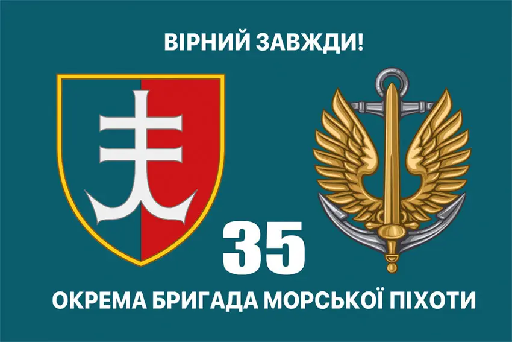

Васін Валерій
Тренер з кіокушинкай карате
Народився 1975 року, м. Херсон.
Займався кіокушинкай карате з п'ятнадцяти років, тренував дітей
35-та окрема бригада морської піхоти ім. Остроградського
Спогад про героя
На початку повномасштабного вторгнення знаходився за кордоном, в перших числах березня повернувся в Україну і приїхав в Одесу, поближче до рідного міста і записався в ЗСУ, в березні вже був в Миколаєві, де боронив рідний край. В серпні просився саме на напрямок херсонський, щоб звільняти рідне місто.
Діти, які займались у Валерія дуже цінували його, був дуже спокійною, врівноваженою людиною, багато з дітей більше не хочуть ні до кого іншого ходити. Завжди поважав думку інших. Був найкращим батьком і чоловіком.
Загинув звільняючи рідний край у Херсонській області.